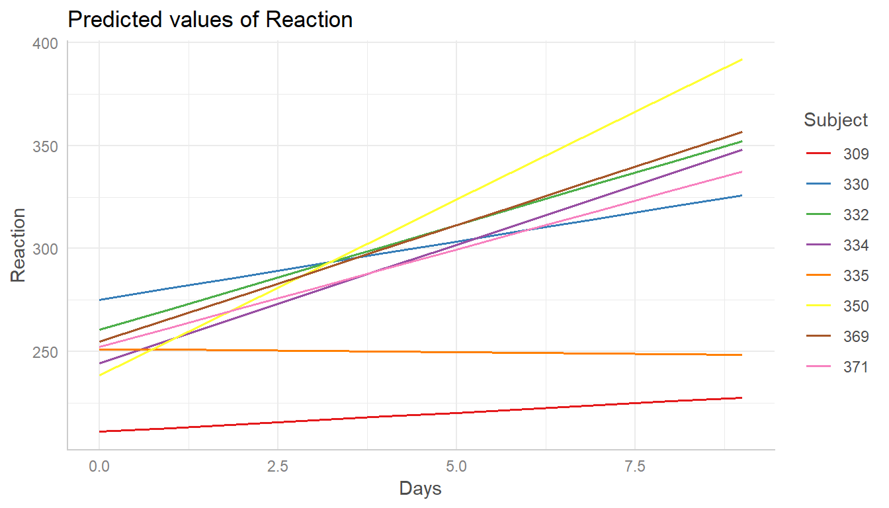
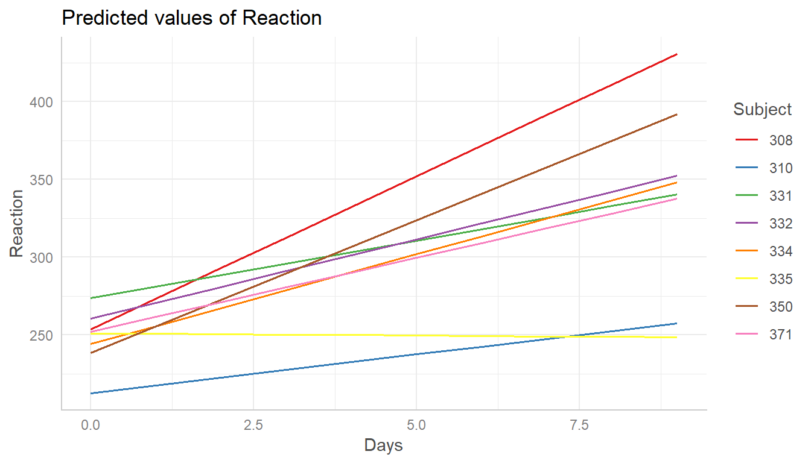

Marginal Effects for Random Effects Models
Daniel Lüdecke
2019-01-03
randomeffects.RmdThis vignette shows how to calculate marginal effects that take the random-effect variances for mixed models into account.
Marginal effects for mixed effects models
Basically, the type of predictions, i.e. whether to account for the uncertainty of random effects or not, can be set with the type-argument. The default, type = "fe", means that predictions are on the population-level and do not account for the random effect variances.
library(ggeffects)
library(lme4)
data(sleepstudy)
m <- lmer(Reaction ~ Days + (1 + Days | Subject), data = sleepstudy)
ggpredict(m, "Days")
#>
#> # Predicted values of Reaction
#> # x = Days
#>
#> x predicted std.error conf.low conf.high
#> 0 251.405 6.825 238.029 264.781
#> 1 261.872 6.787 248.570 275.174
#> 2 272.340 7.094 258.435 286.244
#> 3 282.807 7.705 267.705 297.909
#> 5 303.742 9.581 284.963 322.520
#> 6 314.209 10.732 293.174 335.244
#> 7 324.676 11.973 301.210 348.142
#> 9 345.611 14.629 316.939 374.283
#>
#> Adjusted for:
#> * Subject = 0 (population-level)When type = "re", the predicted values are still on the population-level. However, the random effect variances are taken into account, meaning that the prediction interval becomes larger. More technically speaking, type = "re" only accounts for the uncertainty of the fixed effects conditional on the estimates of the random-effect variances and conditional modes (BLUPs).
The random-effect variance is the mean random-effect variance. Caculation is based on the proposal from Johnson et al. 2014 and implemented in functions like sjstats::r2() or sjstats::re_var().
As can be seen, compared to the previous example with type = "fe", predicted values are identical (both on the population-level). However, standard errors, and thus the resulting confidence (or prediction) intervals are much larger .
ggpredict(m, "Days", type = "re")
#>
#> # Predicted values of Reaction
#> # x = Days
#>
#> x predicted std.error conf.low conf.high
#> 0 251.405 41.769 169.539 333.271
#> 1 261.872 41.763 180.019 343.726
#> 2 272.340 41.814 190.386 354.293
#> 3 282.807 41.922 200.642 364.972
#> 5 303.742 42.307 220.822 386.661
#> 6 314.209 42.582 230.749 397.669
#> 7 324.676 42.912 240.571 408.781
#> 9 345.611 43.727 259.907 431.315
#>
#> Adjusted for:
#> * Subject = 0 (population-level)The reason why both type = "fe" and type = "re" return predictions at population-level is because ggpredict() returns predicted values of the response at specific levels of given model predictors, which are defined in the data frame that is passed to the newdata-argument (of predict()). The data frame requires data from all model terms, including random effect terms. This again requires to choose certain levels or values also for each random effect term, or to set those terms to zero or NA (for population-level). Since there is no general rule, which level(s) of random effect terms to choose in order to represent the random effects structure in the data, using the population-level seems the most clear and consistent approach.
To get predicted values for a specific level of the random effect term, simply define this level in the condition-argument.
ggpredict(m, "Days", type = "re", condition = c(Subject = 330))
#>
#> # Predicted values of Reaction
#> # x = Days
#>
#> x predicted std.error conf.low conf.high
#> 0 275.096 41.769 193.230 356.961
#> 1 280.749 41.763 198.895 362.602
#> 2 286.402 41.814 204.448 368.355
#> 3 292.054 41.922 209.889 374.220
#> 5 303.360 42.307 220.440 386.280
#> 6 309.013 42.582 225.554 392.473
#> 7 314.666 42.912 230.561 398.772
#> 9 325.972 43.727 240.268 411.676Finally, it is possible to obtain predicted values by simulating from the model, where predictions are based on simulate().
ggpredict(m, "Days", type = "sim")
#>
#> # Predicted values of Reaction
#> # x = Days
#>
#> x predicted conf.low conf.high
#> 0 251.282 201.281 301.167
#> 1 261.711 211.419 311.596
#> 2 272.412 222.736 322.302
#> 3 282.918 232.849 333.111
#> 5 303.905 253.967 353.897
#> 6 314.448 264.957 364.689
#> 7 324.484 274.856 374.066
#> 9 345.852 296.160 395.469
#>
#> Adjusted for:
#> * Subject = 0 (population-level)Marginal effects for zero-inflated mixed models
For zero-inflated mixed effects models, typically fitted with the glmmTMB-package, predicted values can be conditioned on
- the fixed effects of the conditional model only (
type = "fe") - the fixed effects and zero-inflation component (
type = "fe.zi") - the fixed effects of the conditional model only (population-level), taking the random-effect variances into account (
type = "re") - the fixed effects and zero-inflation component (population-level), taking the random-effect variances into account (
type = "re.zi") - all model parameters (
type = "sim")
library(glmmTMB)
data(Salamanders)
m <- glmmTMB(
count ~ spp + mined + (1 | site),
ziformula = ~ spp + mined,
family = truncated_poisson,
data = Salamanders
)Similar to mixed models without zero-inflation component, type = "fe" and type = "re" for glmmTMB-models (with zero-inflation) both return predictions on the population-level, where the latter option accounts for the uncertainty of the random effects. In short, predict(..., type = "link") is called.
ggpredict(m, "spp")
#>
#> # Predicted counts of count
#> # x = spp
#>
#> x predicted std.error conf.low conf.high
#> 1 0.935 0.206 0.624 1.400
#> 2 0.555 0.308 0.304 1.015
#> 3 1.171 0.192 0.804 1.704
#> 4 0.769 0.241 0.480 1.233
#> 5 1.786 0.182 1.250 2.550
#> 6 1.713 0.182 1.200 2.445
#> 7 0.979 0.196 0.667 1.437
#>
#> Adjusted for:
#> * mined = yes
#> * site = NA (population-level)
ggpredict(m, "spp", type = "re")
#>
#> # Predicted counts of count
#> # x = spp
#>
#> x predicted std.error conf.low conf.high
#> 1 0.935 0.309 0.510 1.714
#> 2 0.555 0.384 0.261 1.180
#> 3 1.171 0.300 0.650 2.107
#> 4 0.769 0.333 0.400 1.478
#> 5 1.786 0.294 1.004 3.175
#> 6 1.713 0.294 0.964 3.045
#> 7 0.979 0.303 0.541 1.772
#>
#> Adjusted for:
#> * mined = yes
#> * site = NA (population-level)For type = "fe.zi", the predicted response value is the expected value mu*(1-p) without conditioning on random effects. Since the zero inflation and the conditional model are working in “opposite directions”, a higher expected value for the zero inflation means a lower response, but a higher value for the conditional model means a higher response. While it is possible to calculate predicted values with predict(..., type = "response"), standard errors and confidence intervals can not be derived directly from the predict()-function. Thus, confidence intervals for type = "fe.zi" are based on quantiles of simulated draws from a multivariate normal distribution (see also Brooks et al. 2017, pp.391-392 for details).
ggpredict(m, "spp", type = "fe.zi")
#>
#> # Predicted counts of count
#> # x = spp
#>
#> x predicted std.error conf.low conf.high
#> 1 0.138 0.048 0.040 0.236
#> 2 0.017 0.009 0.000 0.035
#> 3 0.245 0.072 0.108 0.382
#> 4 0.042 0.018 0.008 0.075
#> 5 0.374 0.113 0.150 0.598
#> 6 0.433 0.118 0.211 0.655
#> 7 0.205 0.062 0.082 0.328
#>
#> Adjusted for:
#> * mined = yes
#> * site = NA (population-level)For type = "re.zi", the predicted response value is the expected value mu*(1-p), accounting for the random-effect variances. Prediction intervals are calculated in the same way as for type = "fe.zi", except that the mean random effect variance is considered for the confidence intervals.
ggpredict(m, "spp", type = "re.zi")
#>
#> # Predicted counts of count
#> # x = spp
#>
#> x predicted std.error conf.low conf.high
#> 1 0.138 0.235 0.029 0.361
#> 2 0.017 0.231 0.000 0.054
#> 3 0.245 0.242 0.064 0.612
#> 4 0.042 0.231 0.004 0.121
#> 5 0.374 0.255 0.101 0.926
#> 6 0.433 0.257 0.137 1.022
#> 7 0.205 0.238 0.055 0.510
#>
#> Adjusted for:
#> * mined = yes
#> * site = NA (population-level)Finally, it is possible to obtain predicted values by simulating from the model, where predictions are based on simulate() (see Brooks et al. 2017, pp.392-393 for details). To achieve this, use type = "sim".
ggpredict(m, "spp", type = "sim")
#>
#> # Predicted counts of count
#> # x = spp
#>
#> x predicted std.error conf.low conf.high
#> 1 1.094 1.290 0 4.164
#> 2 0.296 0.670 0 2.284
#> 3 1.521 1.544 0 5.229
#> 4 0.539 0.950 0 3.109
#> 5 2.218 2.135 0 7.197
#> 6 2.276 2.063 0 7.099
#> 7 1.320 1.368 0 4.697
#>
#> Adjusted for:
#> * mined = yes
#> * site = NA (population-level)Marginal effects for each level of random effects
Marginal effects can also be calculated for each group level in mixed models. Simply add the name of the related random effects term to the terms-argument, and set type = "re".
In the following example, we fit a linear mixed model and first simply plot the marginal effetcs, not conditioned on random-effect variances.
library(sjlabelled)
data(efc)
efc$e15relat <- as_label(efc$e15relat)
m <- lmer(neg_c_7 ~ c12hour + c160age + c161sex + (1 | e15relat), data = efc)
me <- ggpredict(m, terms = "c12hour")
plot(me)
Changing the type to type = "re" still returns population-level predictions by default. Recall that the major difference between type = "fe" and type = "re" is the uncertainty in the variance parameters. This leads to larger confidence intervals for marginal effects with type = "re".

To compute marginal effects for each grouping level, add the related random term to the terms-argument. In this case, confidence intervals are not calculated, but marginal effects are conditioned on each group level of the random effects.

Marginal effects, conditioned on random effects, can also be calculated for specific levels only. Add the related values into brackets after the variable name in the terms-argument.

If the group factor has too many levels, you can also take a random sample of all possible levels and plot the marginal effects for this subsample of group levels. To do this, use term = "<groupfactor> [sample=n]".
m <- lmer(Reaction ~ Days + (1 + Days | Subject), data = sleepstudy)
me <- ggpredict(m, terms = c("Days", "Subject [sample=8]"), type = "re")
plot(me)
References
Brooks ME, Kristensen K, Benthem KJ van, Magnusson A, Berg CW, Nielsen A, et al. glmmTMB Balances Speed and Flexibility Among Packages for Zero-inflated Generalized Linear Mixed Modeling. The R Journal. 2017;9: 378–400.
Johnson PC, O’Hara RB. 2014. Extension of Nakagawa & Schielzeth’s R2GLMM to random slopes models. Methods Ecol Evol, 5: 944-946. (doi: 10.1111/2041-210X.12225)